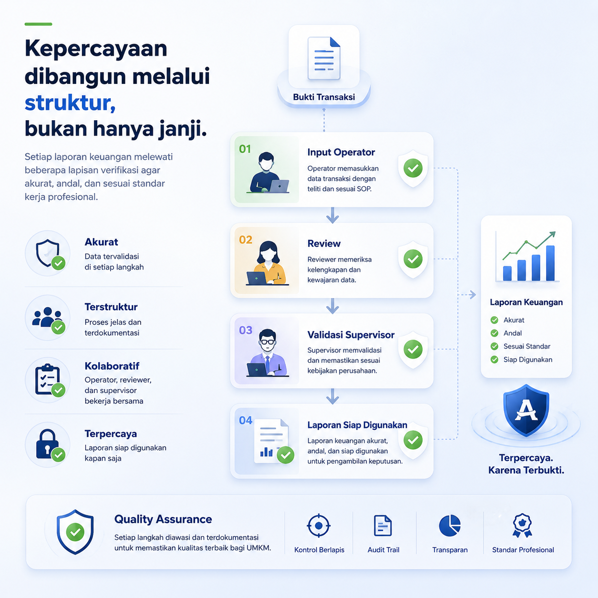

Akuntara membangun ekosistem akuntansi untuk UMKM Indonesia.
Akuntara, Akuntansi Nusantara, hadir untuk mempertemukan teknologi, talenta akuntansi, reviewer, supervisor, quality control, dan institusi pendidikan dalam satu perjalanan layanan yang dapat dipercaya.
Akuntara dirancang sebagai ekosistem keuangan, bukan hanya tools pencatatan.
Setiap layanan menggabungkan sistem digital, talent terlatih, reviewer, supervisor, dan partner pendidikan agar pemilik bisnis tidak berjalan sendiri saat membangun fondasi keuangan.
- Untuk UMKMpembukuan, pajak, dan laporan yang lebih tertib
- Untuk Talentjalur pengalaman kerja akuntansi digital yang terarah
- Untuk Partnerkolaborasi pendidikan, training, dan pengembangan talenta
- Untuk Ekosistemstandar kerja yang bisa tumbuh bersama banyak bisnis
Akuntara: bukan sekadar software, bukan sekadar outsourcing.
Akuntara membantu mengubah pekerjaan keuangan yang sering tersebar di chat, spreadsheet, dan dokumen manual menjadi alur kolaborasi yang lebih terstruktur, manusiawi, dan terjaga kualitasnya.
Ini Bukan
- Software akuntansi biasa
- Marketplace freelancer
- Portal lowongan kerja
Ini Adalah
- Platform layanan keuangan berbasis ekosistem
- Mitra jangka panjang UMKM Indonesia
- Penggerak ekosistem akuntansi nasional
UMKM membutuhkan data yang bisa dipercaya, tetapi tidak semua mampu membangun tim lengkap sejak awal.
Akuntara lahir untuk membuat pengelolaan keuangan lebih terjangkau, terstruktur, dan tetap manusiawi melalui teknologi, talent development, dan lapisan review profesional.
Untuk UMKM
Mempermudah akses ke pencatatan dan laporan yang lebih profesional.
Untuk Talent
Menciptakan jalur belajar dan pengalaman kerja akuntansi digital.
Untuk Sekolah
Menghubungkan pendidikan akuntansi dengan kebutuhan dunia kerja.
Untuk Ekosistem
Membangun standar kerja yang dapat tumbuh bersama banyak UMKM.
Kepercayaan dibangun melalui struktur, bukan hanya janji.
Data keuangan ditinjau melalui beberapa lapisan verifikasi agar laporan yang diterima UMKM lebih akurat, andal, dan sesuai standar kerja profesional.

Akuntara tumbuh bersama UMKM, talenta akuntansi, dan institusi pendidikan.
Setiap proses pencatatan dan review dapat menjadi ruang belajar bagi talenta muda, sekaligus membantu UMKM mendapatkan dukungan keuangan yang lebih profesional.
Akses ke layanan keuangan profesional tanpa harus membangun tim besar sejak awal.
Talenta muda belajar dari dokumen dan proses bisnis nyata dengan supervisi.
Institusi pendidikan terhubung dengan kebutuhan industri akuntansi modern.
Akuntara menyatukan SOP, reviewer, supervisor, dan platform dalam satu alur.
Akuntara ingin menjadi infrastruktur kolaborasi untuk akuntansi UMKM Indonesia.
Dalam jangka panjang, Akuntara tidak hanya membantu laporan keuangan. Akuntara ingin memperkuat hubungan antara UMKM, talent, reviewer, supervisor, dan pendidikan akuntansi yang relevan dengan dunia kerja.
Founder / Director
Menjaga arah pengembangan Akuntara sebagai mitra keuangan UMKM yang terstruktur dan dapat dipercaya.
Accounting Lead
Memastikan standar akuntansi, review, dan kualitas laporan berjalan konsisten di setiap layanan.
Partnership Lead
Mengembangkan hubungan dengan sekolah, kampus, komunitas, dan mitra pelatihan talent.